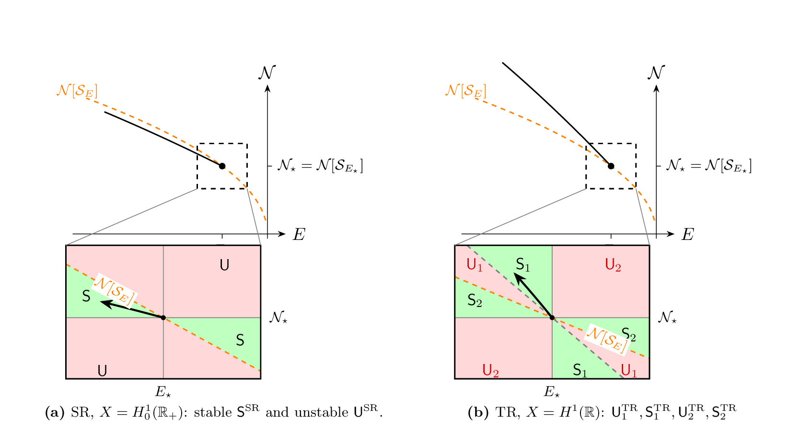

I completed my PhD in Applied Mathematics at Columbia University,
advised by Michael I. Weinstein, where I characterized a novel
class of coherent wave excitations and their dynamical stability
as manifestations of spontaneous symmetry breaking in nonlinear
Schrödinger equations. My broader research spans spectral and
scattering theory, bifurcation analysis, numerical eigenvalue
solvers, and spectral geometry.
Previously, I developed stability analysis tools for plasmas in
magnetic confinement fusion at Zap Energy, and studied spectral
geometry and eigenvalue optimization at Utah.
Variational analysis and functional-analytic methods for nonlinear PDEs
Nonlinear Schrödinger equations and quantum control
Quantum materials
Spectral and scattering theory
Bifurcation theory and numerical continuation
Hamiltonian systems analysis
GPU-accelerated scientific computing
Physics-informed machine learning and neural operators
Magnetohydrodynamic equations and plasma instabilities
Stability theory in fluid and plasma mechanics
03
Publications

2026 · Preprint
Stability and instability analysis of resonance-induced nonlinear bound states
Jackson C. Turner & Michael I. Weinstein
We study the focusing one-dimensional cubic nonlinear
Schrödinger / Gross–Pitaevskii equation with a compactly
supported potential. Building on resonance-induced branches found
at a strictly positive excitation threshold, we establish precise
criteria for their nonlinear orbital stability and instability near
bifurcation. In particular, these states are orbitally stable when
the underlying scattering or transmission resonance frequency is
sufficiently small and its resonance eigenmode is strictly
positive. Numerical simulations then explore regimes beyond the
theory and the long-time behavior near stable and unstable states.
On the ideal stability of the sheared-flow Z pinch
Daniel W. Crews & Jackson C. Turner
Sheared-flow Z-pinch stability has been studied within ideal MHD
primarily through growth rate calculations, which find that even
trans-Alfvénic sheared flows apparently fail to suppress the
kink instability. Trans-Alfvénic sheared flow does stabilize
the MHD kink but also excites shear-driven instabilities
characteristic of high-Reynolds-number supersonic flow. This
distinction is evident from the dispersion relations underlying the
growth rates, computed here as the analytic dispersion function in
the complex-frequency plane. Regularization splits this function
into adiabatic and resonant parts describing how discrete modes
emerge from and interact with the continuous spectrum. The
Doppler-shifted flow continuum interacts with the interchange and
kink instabilities in distinct ways. For interchange, the continuum
overlaps the instability branch at all wavenumbers, so even
sub-Alfvénic sheared flow stabilizes profiles modestly beyond
the interchange threshold. The kink, by contrast, is shielded from
the continuum by a frequency gap, and trans-Alfvénic flow is
required to Doppler-shift the continuum into resonance with it,
giving a geometric picture of the stabilization threshold. But
shear-driven instabilities arise at this same threshold, including
reflection modes and an acoustic kink. It is these shear-driven
modes, not the original MHD instabilities, that dominate the
ideal-MHD spectrum in trans-Alfvénic conditions. The ideal
analysis thus describes the stabilization mechanism while showing
that the stability of the sheared-flow Z pinch ultimately rests on
non-ideal physics, including finite orbit width and dissipation.
We study nonlinear bound states — time-harmonic and spatially
decaying (L²) solutions — of the nonlinear
Schrödinger / Gross–Pitaevskii equations (NLS/GP) with a
compactly supported linear potential. Such solutions are known to
bifurcate from the L² bound states of an underlying
Schrödinger operator HV = −∂x² + V.
In this article we prove an extension of this result: for the 1D
NLS/GP, nonlinear bound states also arise via bifurcation from the
scattering resonance states and transmission resonance states of
HV, associated with the poles and zeros, respectively, of
the reflection coefficients, r±(k), of HV.
The corresponding resonance states are non-decaying and only
L²loc. In contrast to nonlinear states arising from
L² bound states of HV, these resonance bifurcations
initiate at a strictly positive L² threshold which is
determined by the position of the complex scattering resonance pole
or transmission resonance zero.
Flat tori with large Laplacian eigenvalues in dimensions up to eight
Chiu-Yen Kao, Braxton Osting & Jackson C. Turner
We consider the optimization problem of maximizing the k-th
Laplacian eigenvalue, λk, over flat d-dimensional
tori of fixed volume. For k=1, this problem is equivalent to the
densest lattice sphere packing problem. For larger k, this is
equivalent to the NP-hard problem of finding the d-dimensional
(dual) lattice with longest k-th shortest lattice vector. As a
result of extensive computations, for d ≤ 8, we obtain a
sequence of flat tori, Tk,d, each of volume one, such
that the k-th Laplacian eigenvalue of Tk,d is very
large; for each (finite) k the k-th eigenvalue exceeds the value
in (the k → ∞ asymptotic) Weyl's law by a factor
between 1.54 and 2.01, depending on the dimension. Stationarity
conditions are derived and numerically verified for Tk,d
and we describe the degeneration of the tori as k → ∞.
A generalized expansion method for computing Laplace-Beltrami eigenfunctions on manifolds
Jackson C. Turner, Elena Cherkaev & Dong Wang
Eigendecomposition of the Laplace-Beltrami operator is
instrumental for a variety of applications from physics to data
science. We develop a numerical method of computation of the
eigenvalues and eigenfunctions of the Laplace-Beltrami operator on
a smooth bounded domain based on the relaxation to the
Schrödinger operator with finite potential on a Riemannian
manifold and projection in a special basis. We prove spectral
exactness of the method and provide examples of calculated results
and applications, particularly, in quantum billiards on manifolds.
Jackson C. Turner · Honors Thesis · University of Utah
Develops the expansion-based approach to Laplacian eigenvalue
problems from first principles, establishes accuracy on canonical
domains, and lays out the numerical foundations that grew into the
Laplace-Beltrami work above.